Assignment 5
Task 1: Create a table called Purchases and all columns. Add all the necessary constraints.
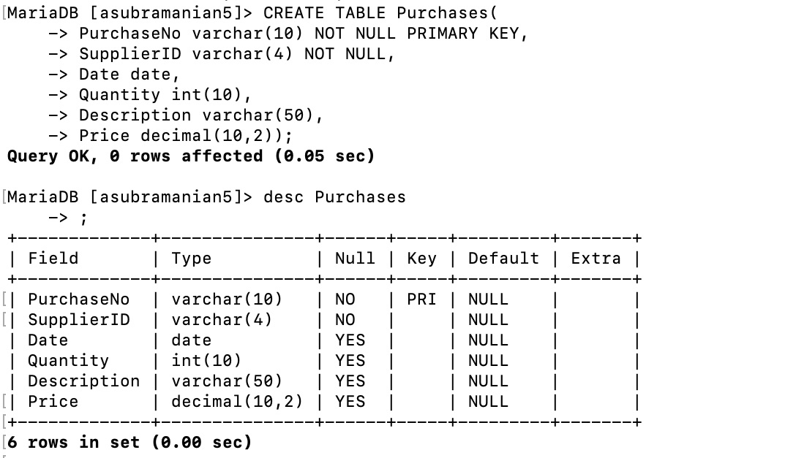
Task 2: Add all the rows from the sample data.
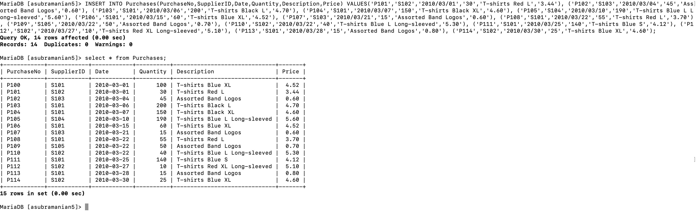
Task 3: Create a display.php script to display this data on a web page. (The data must be
displayed in a tablular form and must be pulled from database).
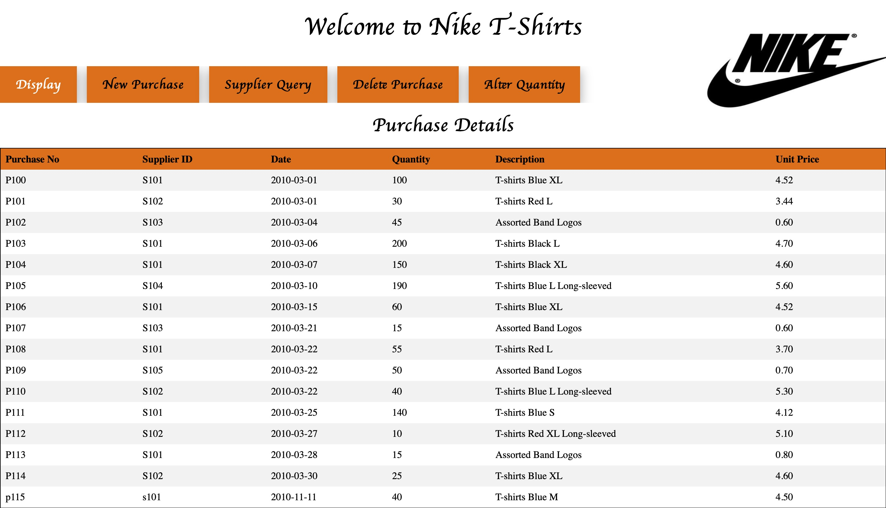
Link to display.php
Task 4: Create a newpurchase.html form and update.php script to add new purchase data to the
table. This form must accept all the details and create a new row in the database. On submitting the form, your page must return to display.php where your updated table is displayed. Write validation for the form, so the user can enter the exact details in exact format.
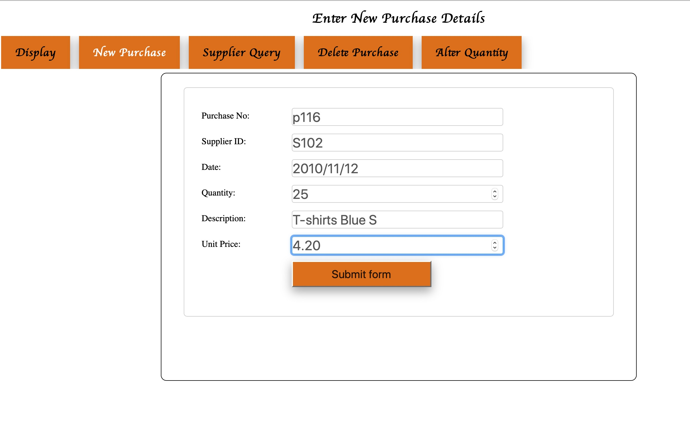
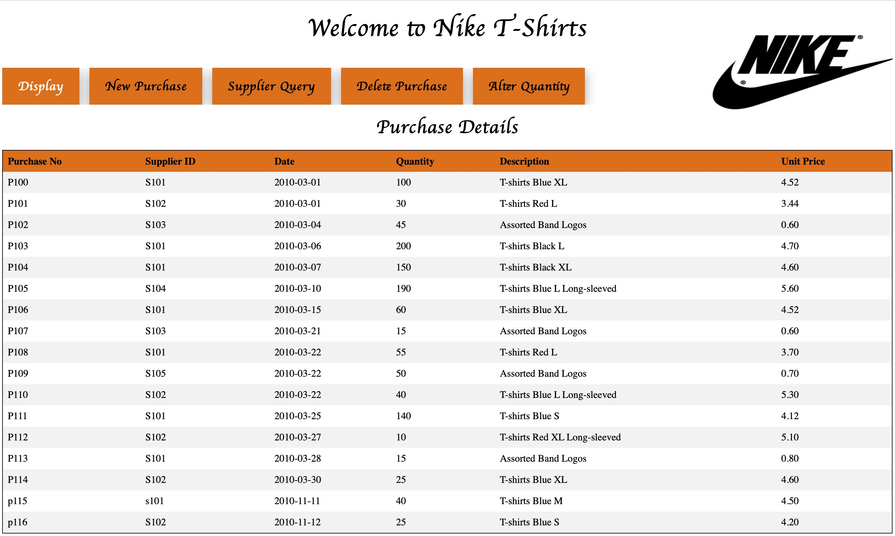
Link to newpurchase.html
Task 5: Create a query.html page for the user to enter the supplier ID for which they wish to search. Create a query.php script to search for purchases from the supplier specified and output these in a tabular format. Ensure that only the date, description and price fields are displayed. The user should be informed about unsuccessful searches.
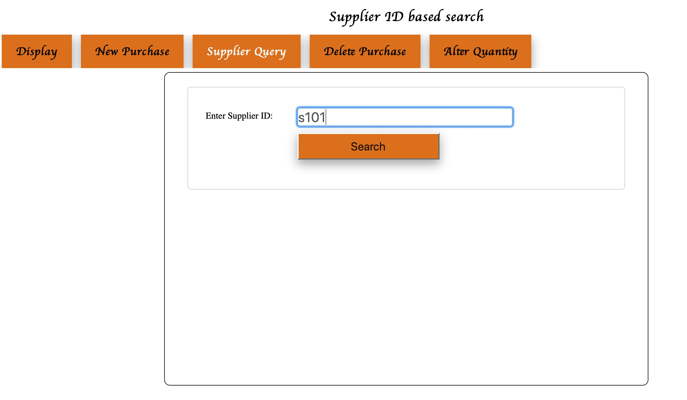
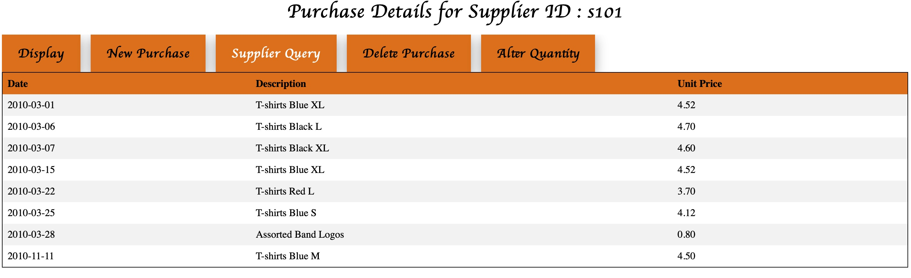
Link to query.html
Link to query.php
Graduate Question 1: Add a facility to delete a purchase from a specified supplier (using php).
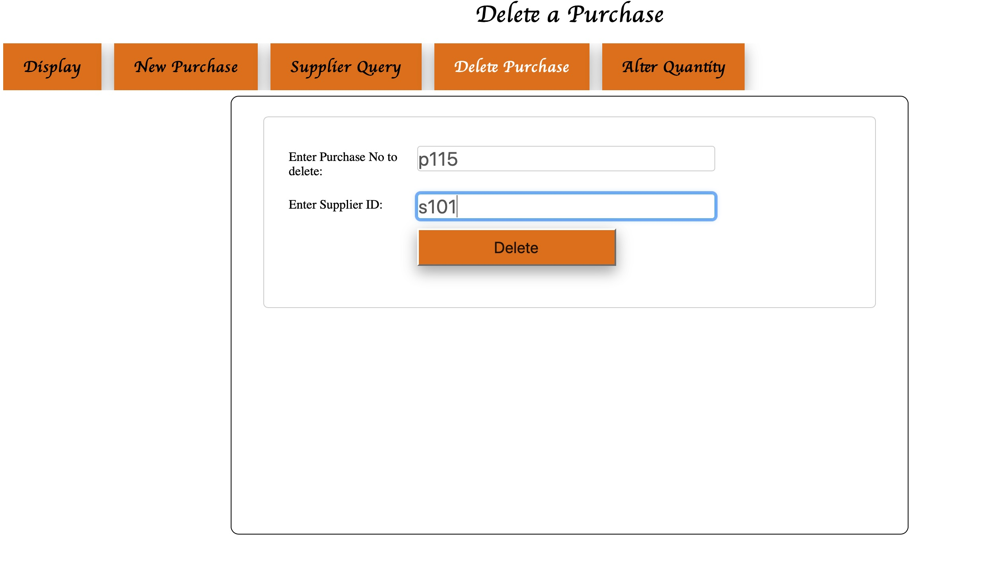
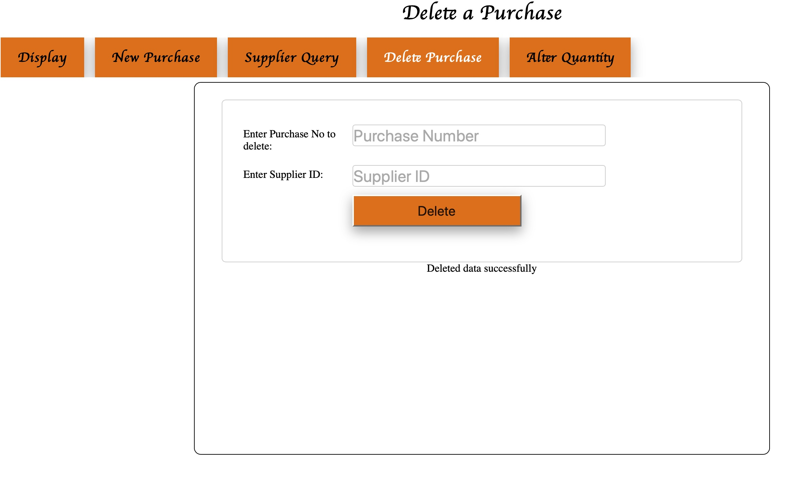
Link to delete.php
Graduate Question 2: Add a facility to alter the quantity of a particular supplier order (using php).
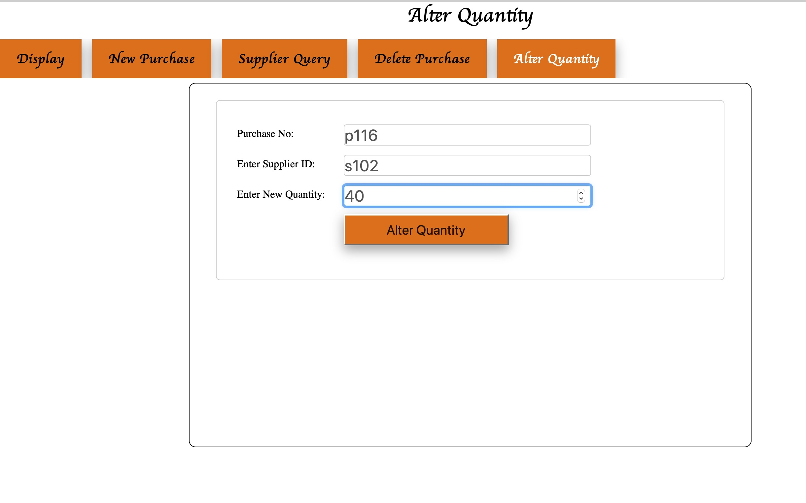
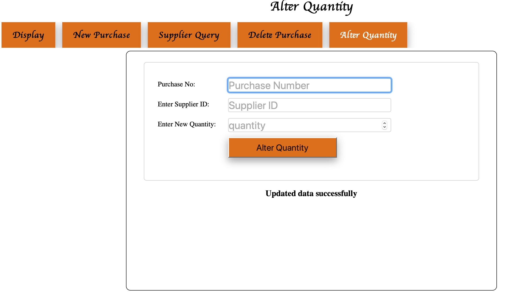
Link to alter.php
Link to my Website
: Nike T-Shirts Website